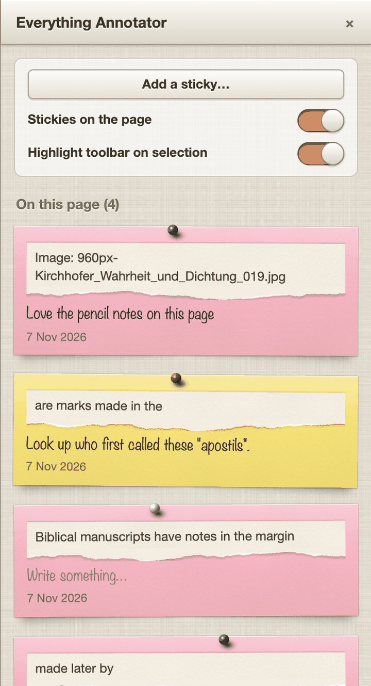
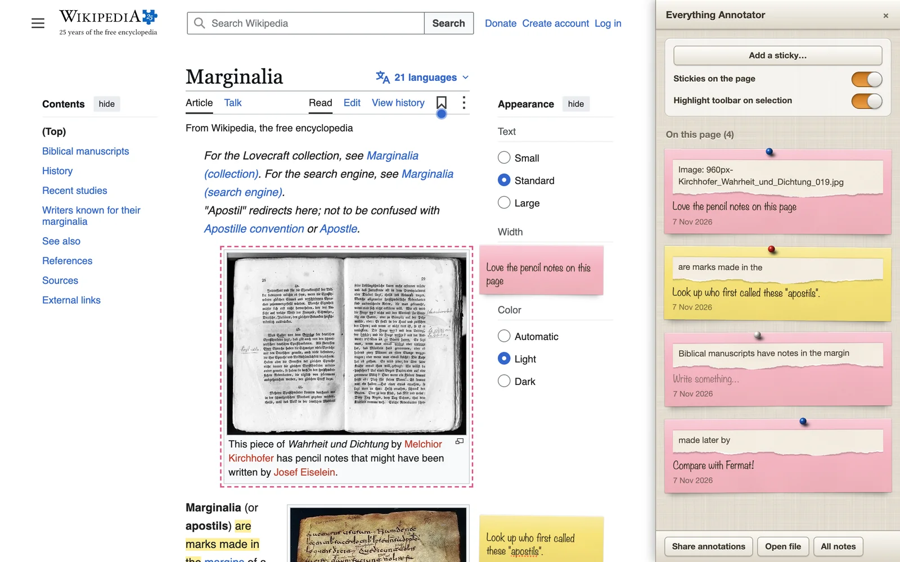

ADD-ONS
Firefox
On Firefox Add-ons, where it’s waiting for Mozilla’s review. It installs and updates from there.
Get it from Firefox Add-onsHighlight a passage. Leave yourself a thought.
Turn any web page into something worth coming back to.
For Firefox, Chrome & Edge on desktop.


On Firefox Add-ons, where it’s waiting for Mozilla’s review. It installs and updates from there.
Get it from Firefox Add-onsOne unpacked extension for both browsers. Download, unzip, and load it in.
Download for Chrome / EdgeA fresh coat in 0.4.1. A cleaner look with linen, pins and torn paper, a dark mode, and smaller stickies. The sidebar also fits neatly inside your browser’s own panel.
chrome://extensions or edge://extensions and enable Developer mode.Already installed? Firefox updates it for you. In Chrome or Edge, replace the files in your existing extension folder and click Reload. Refresh your open web pages afterward. Keep the extension installed to retain your saved notes.
Choose Share annotations in the sidebar to save your notes and the page URL in one bundle. Send the file, then use Open file in Everything Annotator to bring the highlights back.